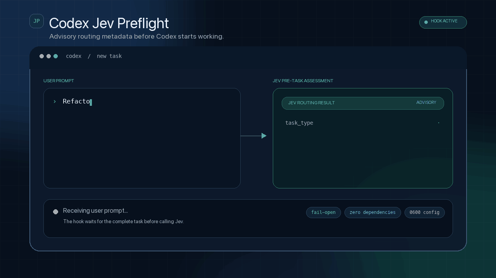

Prompt arrives
Codex forwards the new user prompt to the UserPromptSubmit hook.
Ask TypeSafe Jev for task type, complexity, risk, and execution mode before Codex starts working. Advisory only. Fail-open by design.

The hook runs before Codex starts the task and adds a compact assessment to the current turn.
Codex forwards the new user prompt to the UserPromptSubmit hook.
One structured request returns four routing choices.
Only declared enum values are injected into Codex context.
Jev advises. Codex remains responsible for the task.
answer · code_change · research · browser_automation · planning · conversation · other
trivial · simple · moderate · complex
low · medium · high
direct_answer · inspect_then_act · plan_then_execute · ask_clarification
Paste this into Codex. It will read the README, install the project, ask for the API key with hidden input, and verify the hook.
Install and configure Codex Jev Preflight from https://github.com/wellkilo/codex-jev-preflight.
Requirements:
1. Read the repository README first.
2. Install the project from source.
3. Run codex-jev-configure and ask me to enter the TypeSafe Jev API key with hidden input. Never ask me to paste the key into chat.
4. Run codex-jev-install and verify the hook output.
5. Preserve existing hooks.json and AGENTS.md configuration.
6. Tell me whether Codex must be restarted or a new task must be opened.git clone https://github.com/wellkilo/codex-jev-preflight.git
cd codex-jev-preflight
python3 -m venv .venv
source .venv/bin/activate
python -m pip install -e .codex-jev-configure
codex-jev-installThis local demo explains the four fields. The installed hook receives the real result from Jev.
Local simulation only. No network request is made.
Code or file changes detected; inspect existing constraints first.
Complete setup, environment variables, troubleshooting, and uninstall steps.
Read documentation → ARCHITECTUREUnderstand the request flow and every fail-open path.
Inspect architecture → SECURITYSee exactly what leaves the machine and how to report a vulnerability.
Read security notes →